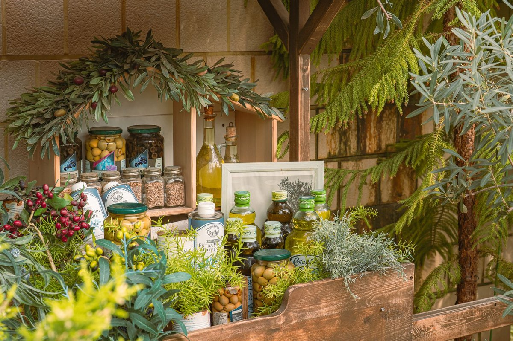

Fix A Hidden Compound In Healthy Foods May Worsen Ibd Fast

Key takeaways
- I used to sit at my kitchen table staring at a bowl of raw spinach and almonds, almost in tears.
- I was doing everything "right" for my gut, yet my digestive system was screaming in agony.
- Track what feels sustainable and adjust gradually.
I used to sit at my kitchen table staring at a bowl of raw spinach and almonds, almost in tears. I was doing everything "right" for my gut, yet my digestive system was screaming in agony. It took me months of painful flare-ups to realize that a hidden compound in healthy foods may worsen Ibd—specifically, high levels of natural plant emulsifiers, food additives like carboxymethylcellulose hidden in organic almond milks, and heavy oxalates.
When you suffer from inflammatory bowel disease, eating clean doesn't always equal feeling good. The truth is, many everyday superfoods contain naturally occurring compounds or hidden processed binders that trigger severe intestinal inflammation in sensitive guts.
Here are 4 practical ways I turned my health around and eliminated these triggers without losing my mind.
First, overhaul your fats. I swapped out processed store-bought salad dressings for pure, cold-pressed oils. A high-quality Extra Virgin Olive Oil provides anti-inflammatory polyphenols that soothe your lining rather than irritating it.
Disclosure: This page may contain affiliate links.
Second, ditch the non-dairy milks containing polysorbate-80 and carboxymethylcellulose. These compounds strip the protective mucus layer of your intestine, making you far more vulnerable to severe inflammation. You can check out this related healthy tip for easy milk alternatives.
Third, cook your greens thoroughly. Steaming or boiling kale and spinach breaks down oxalates and tough insoluble fiber that otherwise scratch away at inflamed tissues. Read our another practical guide on gentle cooking methods for sensitive stomachs.
Fourth, track your personal threshold. Not everyone reacts to every plant compound the same way, so keeping a honest symptom log helps you identify your unique triggers quickly. Check this similar wellness insight to set up a simple daily food log.
The 2-Minute Win
Scan your fridge right now for store-bought sauces or plant milks. Toss any bottle that lists gums, carrageenan, or emulsifiers in the ingredients list.
Taking control of your gut health takes time, but avoiding these sneaky compounds gives your body a real chance to heal. To stay consistent with this journey, start small with one dietary shift this week.
Remember that this article is educational only — not medical advice. Always work closely with your GI specialist before radically altering your medical diet.
Pro-Tip: When buying healthy fats, always look for dark glass bottles and a harvest date to ensure you are getting real anti-inflammatory power. Feel free to explore more gut guides for more daily inspiration.
Recommended Reading
- Is Your Toddler Eating Ultra-Processed Foods? The Shocking Truth About Toddler Meals
- Busy Pro's Guide to Quick, Healthy Eating
- Ditch the Processed Stuff: Slash Your Heart Disease Risk
More in gut
 gut
gut3 Science-Backed Lessons: Sugary Drinks & Stomach Cancer Risk
Learn how one sugary drink a day linked to more than double the risk of stomach cancer, and explore 3 science-backed way
Read article → gut
gutPopular Sugar Substitute's Secret Health Hazard Uncovered by Scientists
Worried about sweeteners? Scientists uncover a secret health hazard in a popular sugar substitute, impacting gut health.
Read article →Related posts
gut3 Science-Backed Lessons: Sugary Drinks & Stomach Cancer Risk
Learn how one sugary drink a day linked to more than double the risk of stomach cancer, and explore 3 science-backed way
Read article →gutPopular Sugar Substitute's Secret Health Hazard Uncovered by Scientists
Worried about sweeteners? Scientists uncover a secret health hazard in a popular sugar substitute, impacting gut health.
Read article → gut
gutBoost Your Gut Microbiome: The Key to Better Health & Digestion
Discover how boosting your gut microbiome is the key to better health & digestion. Learn practical tips to increase gut
Read article →